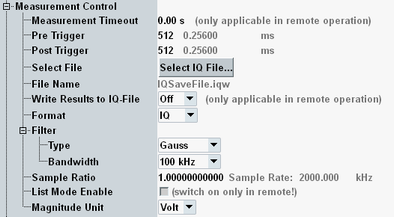

The "Measurement Control" parameters define how the R&S CMW acquires measurement data.

Defines a timeout for the IQ recorder measurement in remote operation. "0.00 s" means that the measurement never runs into a timeout. See detailed information in the remote command description.
Remote command:Defines the total number of samples and their position relative to the trigger event. The total number of samples is equal to the sum of the "Pre Trigger" and "Post Trigger" settings. The R&S CMW continuously acquires raw measurement data, so it is possible to evaluate results before the actual trigger event ("Pre Trigger" samples).
For free run measurements, the individual "Pre Trigger" and "Post Trigger" settings are not relevant. The R&S CMW starts measuring immediately, acquiring the selected total number of samples.
For R&S CMW500/2xx with BB Meas, you can increase the maximum total number of samples by only storing the results to a file, without keeping them in the memory. See "Write Results to IQ File".
Remote command:Selects the name and path of a file that is used to store the I/Q recorder results in binary format. To write the file, the I/Q recorder measurement must be started using the measurement control softkey.
Remote command:Selects whether the results are written to an I/Q file, to the memory or both.
"Off" | The results are only stored in the memory. They can be queried via remote control commands. |
"On" | The results are stored in the memory and in the selected file. |
"Only" | The results are only stored in the selected file. Use this selection if you want to record huge amounts of data that do not fit into the memory. |
Selects the coordinates that are used to represent the I/Q recorder results: cartesian ("IQ") or polar ("RPhi").
Remote command:Sets the type and bandwidth of the measurement filter (IF filter). The R&S CMW provides filters of Gaussian shape with 3-dB bandwidths between 1 kHz and 10 MHz and bandpass filters with 3-dB bandwidths between 1 kHz and 40 MHz.
The bandpass filters are designed as root-raised cosine (RRC) filters with a roll-off of 0.1. This design ensures steep filter edges with a wide, flat passband (90 % of the filter bandwidth). Compared to Gaussian filters, the bandpass filters require longer settling times and therefore increase the measurement duration.
Remote command:Reduces the sampling rate (as defined by the filter settings) by a factor ≤1 and thus extends the total measurement time. See "Filter Settings and Samples".
The resulting sampling rate is displayed for information purposes only.
Remote command:Indicates whether the list mode has been enabled via remote control command. See "List Mode".
Remote command:Selects the physical unit for I/Q measurement results. The R&S CMW returns the I/Q amplitudes either in "Voltage" units (into a 50 Ω load impedance) or as linear "Raw" amplitudes in Int16 format (value range –32768 to +32767). The maximum raw amplitude value (full scale value) corresponds to the selected reference level (see "Expected Nominal Power").
Irrespective of the selected magnitude unit, it is possible to retrieve the I/Q data in ASCII format or as binary 32-bit IEEE 754 floating point numbers, see "ASCII and Binary Data Formats".
Remote command: